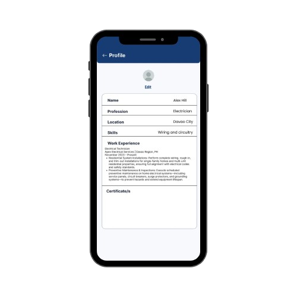
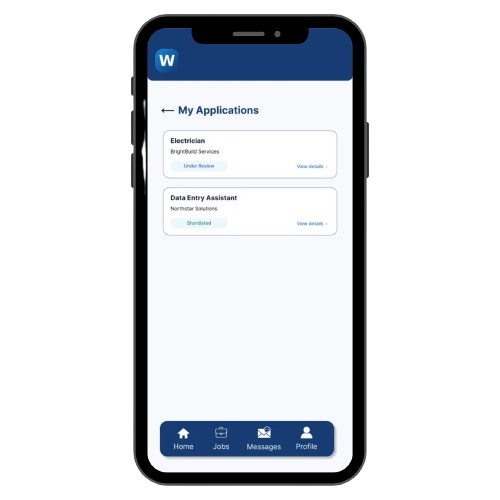
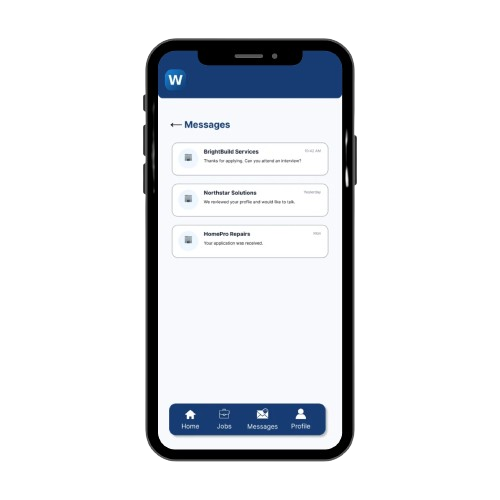
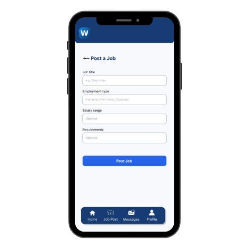
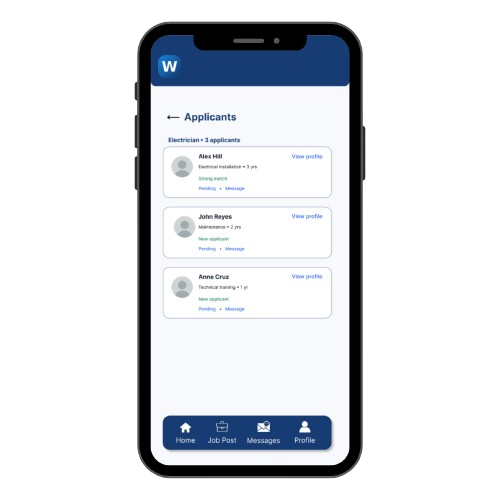
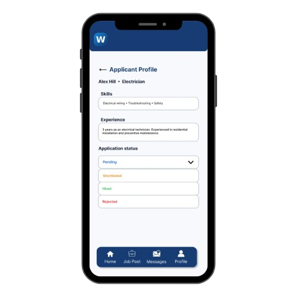

Job Search
Browse available job opportunities based on location, category, salary, and employment type.
WorkLink is a digital job search and recruitment platform that brings job seekers and employers together in one convenient place. Whether you are searching for your first job, looking for better career opportunities, or hiring qualified employees, WorkLink helps you make the right connection.
One platform for people looking for opportunities and businesses looking for talent.
Connecting job seekers and employers through a convenient and reliable digital platform.
WorkLink is a proposed digital job-matching startup designed to help solve the challenges of finding employment and recruiting workers. Many job seekers struggle to find suitable opportunities, while employers spend time searching for qualified applicants through different platforms.
WorkLink aims to make this process more convenient by providing one platform where job seekers can discover job opportunities and employers can find potential workers based on their skills, experience, and qualifications.
To make job searching and recruitment easier, faster, and more accessible by connecting job seekers and employers through a convenient and reliable digital platform.
To become a trusted job-matching platform that creates more employment opportunities and helps businesses find the right people for their workforce.
WorkLink provides convenient job-searching and recruitment services for job seekers and employers.
Explore job openings, build your profile, and manage your applications through WorkLink.
Browse available job opportunities based on location, category, salary, and employment type.

Create a professional profile containing personal information, skills, education, and work experience.

Apply directly to available job postings and submit your application conveniently.

Monitor your application progress, from application submission to hiring.

Communicate with employers regarding job applications, interviews, and employment opportunities.
Post job opportunities, review applicants, and communicate with potential employees.

Create a company profile containing business information, company details, and location.

Publish job openings with descriptions, qualifications, salary ranges, and work schedules.

View and manage applicants who submit applications for your available job openings.

Review potential workers based on their qualifications, experience, and skills.

Communicate with applicants regarding interviews, application updates, and hiring decisions.
Whether you are looking for a job or searching for the right employee, WorkLink is here to help you connect.
Discover job opportunities, create your profile, and apply for jobs that match your skills.
Find qualified workers, post job openings, and connect with potential applicants.
Learn how WorkLink makes job searching and recruitment easier, faster, and more convenient.
Have questions or want to know more about our platform? Reach out through our communication channels.
Panabo City, Davao del Norte
Monday – Friday
8:00 AM – 5:00 PM